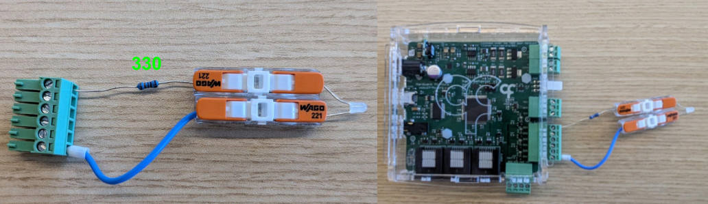
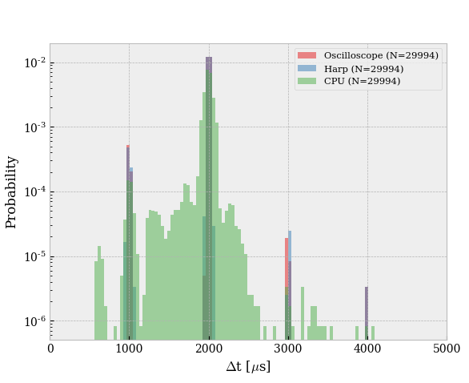

Sending Commands to the device
Assemble the following example: 
Change the state of the digital output line
The Harp Behavior device has a set of four registers that can be used to control the state of the digital output lines: OutputSet, OutputClear, OutputToggle and OutputState. For simplicity, we will only use the OutputSet and OutputClear registers in this example. These registers are used to set or clear the state of a specific line, respectively. Similarly to the DigitalInputState, the value of this register also multiplexes the value of all the lines. First, we will set the state of line DO3 to High:
- Add a
KeyDown(Windows.Input)operator and set theFilterproperty to a specific key (e.g.1). - Add a
CreateMessage(Harp.Behavior)operator in after theKeyDownoperator. - Select
OutputSetPayloadunderPayload. Make sure theMessageTypeis set toWritesince we will now be asking the device to change the value of one of its registers. - In the property
OutputSet, select the line you want to turn on (e.g.DO3). - Replicate the previous steps to clear (turn off) the state of the line
DO3by using theOutputClearPayloadinstead, and theKeyDownoperator with a different key (e.g.2). - Verify that you can turn On and Off the line
DO3by pressing the keys1and2, respectively.
Changing the pulse mode of a digital output line
In most Harp devices you will find registers dedicated for configuration rather than "direct control". One example is the OutputPulseEnable register in the Harp Behavior board. This register is used when the user wants to pulse the line for a specific, pre-programmed, duration (e.g. opening a solenoid valve for exactly 10ms). To use this feature:
- Subscribe to the
BehaviorEventsstream. - Add a
Takeoperator. - Add
CreateMessage(Harp.Behavior)operator in after theTakeoperator. - Select
OutputPulseEnablePayloadunderPayload. Make sure theMessageTypeis set toWrite. - Select the line you want to pulse (e.g.
DO3), and add aMulticastSubjectoperator to send the message to the device. - Add another
CreateMessage(Harp.Behavior)operator after theMulticastSubjectoperator. - Select
Pulse<Pin>Payload, and set the value to the number of milliseconds you want this line to be high for on each pulse. - Add a
MulticastSubjectoperator to send the message to the device. - Verify you see a pulse on the line
DO3every time you press the key1.
Note
The BehaviorEvents->Take(1) pattern will wait for the first message from the device before sending any commands, guaranteeing that the device is ready to receive commands.
Getting the timestamp of a Write message
While we know that the state of the line DO3 is changing, we do not have access to WHEN this change is occurring. Remember that for each Write message issued by the computer as a command, a Write message reply should be sent back from the device. To grab the timestamp of the reply message:
- Subscribe to the
BehaviorEventsstream. - Add a
Parse(Harp.Behavior)operator and set theRegistertoTimestampedOutputSet. - Expose the
ValueandSecondsmembers of the output structure. - Add a
BitwiseAnd(DO3)and aGreaterThan(0)operator, afterValueto extract the state of the lineDO3. - Add a
Conditionoperator to only allowTruevalues to pass through (since we are only interested in changes ofDO3). - Recover the initial timestamp of the message by using a
WithLatestFromoperator connecting the output ofConditionandSeconds.
Note
More documentation on how to manipulate timestamped messages can be found here
Closing the loop with PWM
Building on top of the Analog Data section, this example will walk you through how to achieve "close-loop" control between the duty-cycle of a closed-loop signal and the value of an ADC channel. This example also highlights one of the major advantages of having a computer in the loop: the ability to easily change the behavior of the system by changing the software.
Configure
DO3to be a PWM output by replicating the previous sections but instead of using thePulse<Pin>Payload, configure the initial frequency (e.g. 500Hz) and duty cycle (e.g. 50%) of the PWM by usingPwmFrequency<Pin>PayloadandPwmDutyCycle<Pin>Payload.Add a
KeyDown(Windows.Input)operator and set theFilterproperty to a specific key (e.g.Up).Add a
CreateMessage(Harp.Behavior)operator in after theKeyDownoperator, and set it toPwmStartand match the value to the pin you are using (e.g.DO3).Repeat the previous steps but now set the
PwmStopregister to stop the PWM signal when the keyDownis pressed.Verify that you can start and stop the PWM signal.
Resume the pattern in from the Analog Data section. and publish the value of the ADC channel 0 via a
PublishSubjectnamedPhotodiode.Add a
Sliceoperator to down-sample the signal to a more manageable update frequency (e.g. 100Hz) by setting theStepproperty to10. This is advised since the Behavior board is only spec'ed to run commands at 1kHz. Different hardware / functionality may require different sampling rates, so be sure to run tests before deploying the system.Subscribe to the
Photodiodestream and add aRescaleoperator. According to the documentation of the Harp Behavior board, the duty cycle register only accepts values between 1 and 99. As a result, we need to rescale the value of the ADC channel to match this range. Set theMaxandMinproperties to the maximum and minimum values of the Photodiode signal. SetRangeMaxandRangeMinto 99 and 1, respectively. Finally, to ensure values are "clipped" to the range, setRescaleTypetoClamp.Finally, add a
Format(Harp.Behavior)operator after theRescalenode.Format, similarly toCreateMessageis a Harp message constructor. It differs fromCreateMessagein that it uses the incoming sequence (in this case the rescaled value of the ADC channel) to populate the message, instead of setting it as a property.Add a
MulticastSubjectoperator to send the message to the device.
Resetting the device
In some cases, you may want to reset the device to its initial known state. The Harp protocol defines a core register that can be used to achieve this behavior:
- Add a
KeyDown(Windows.Input)operator and set theFilterproperty to a specific key (e.g.R). - Add a
CreateMessage(Bonsai.Harp)operator in after theKeyDownoperator. - Select
ResetDevicePayloadinPayload, andRestoreDefaultas the value of the payload. - Add a
MulticastSubjectoperator to send the message to the device. - Run Bonsai. The board's led should briefly flash to indicate that the reset was successful.
Benchmarking round-trip time
As a final example, we will show how to measure the round-trip time of a message sent to the device. This is useful to understand the latency of the closed-loop system and to ensure that the system is running as expected. The idea is to send a message to set the state of a digital output line, wait for the reply (t1) message, and invert the state of the line once this message is received, once again waiting for the second, corresponding, reply (t2). By calculating t2-t1, we will have the time it takes for a message to be sent from the device, processed by the computer and received again by the device:
- Connect
DO3toDI3with a jumper cable. - Read the timestamped values from the
DI3pin usingDigitalInputState: - Subscribe to the
BehaviorEventsstream. Add aParse(Harp.Behavior)operator and set theRegistertoTimestampedDigitalInputState. Expose theValueandSecondsmembers of the output structure. - Add a
BitwiseAnd(DI3)and aGreaterThan(0)operator, afterValueto extract the state of the lineDI3. Add aDistinctUntilChangedoperator to only propagate the message if the state of the line of interest changes. Publish this value to aPublishSubjectnamedDI3State. - Recover the timestamp of the message using a
WithLatestFromoperator connecting the output ofDistinctUntilChangedandSeconds. - Add a
Differenceoperator to calculate the time between the two messages (i.e.t2-t1).
Now that we have the state of the input line, we need a way to close-loop it with the output line.
- Subscribe to the
DI3Statestream; - Make two branches from this stream, to set-up a
if-else-like statement. - To the first branch, add a
Conditionthat will take care of the case where the state of the input line isHigh. Add aCreateMessage(Harp.Behavior)operator and set it toOutputClearPayloadto turn off the lineDO3. - To the second branch, add a
BitWiseNotfollowed by aConditionoperator to take care of the case where the state of the input line isLow. Add aCreateMessage(Harp.Behavior)operator and set it toOutputSetPayloadto turn on the lineDO3. - Join the two branches with a
Mergeoperator, and propagate the message to the device using aMulticastSubject. - Run the workflow and check the output of the
Differencestream.
Note
The timestamps reported by Harp can be independently validated by probing the digital output line and calculating the time between each toggle. We have done this exercise in the past and found that the timestamps closely match.

| Source | Mean[μs] | Std[μs] | Min[μs] | Max[μs] | 1%[μs] | 99%[μs] |
|---|---|---|---|---|---|---|
| Oscilloscope | 1972.1 | 174.1 | 985.0 | 4002.0 | 991.0 | 2019.0 |
| Harp | 1972.1 | 174.0 | 959.9 | 4000.2 | 991.8 | 2016.1 |
| CPU | 1971.7 | 171.9 | 576.0 | 4057.0 | 1011.0 | 2240.0 |